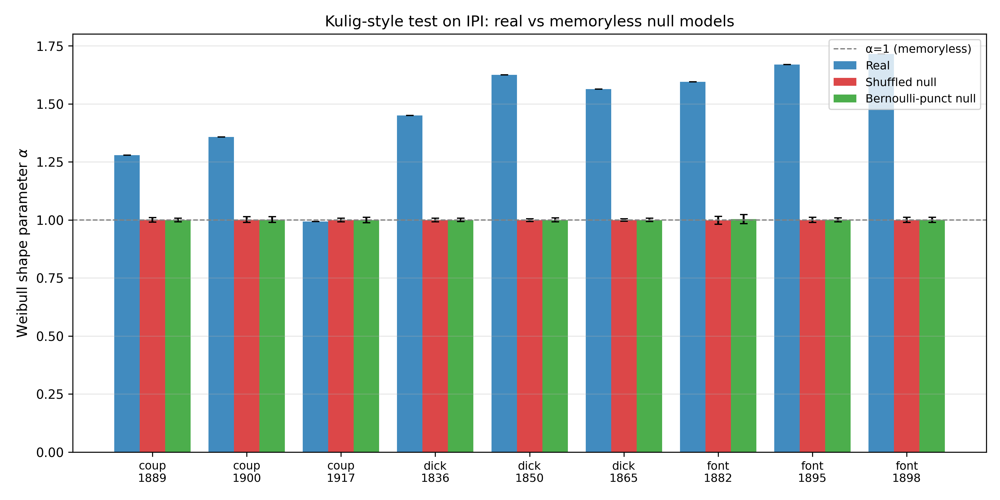
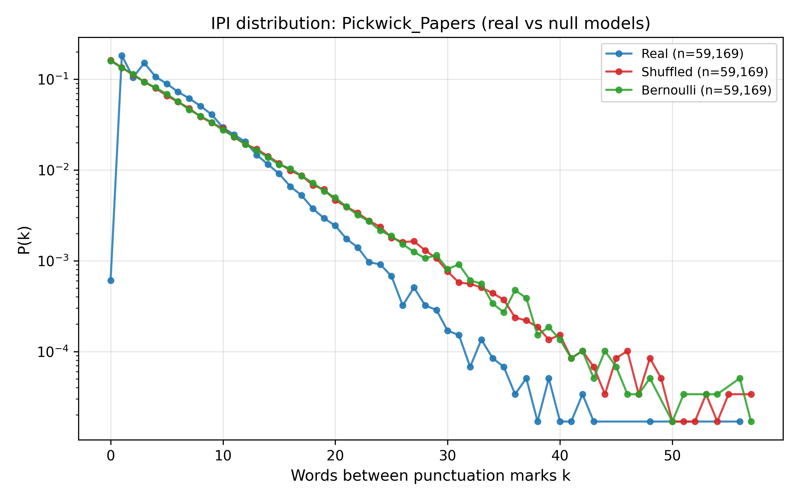
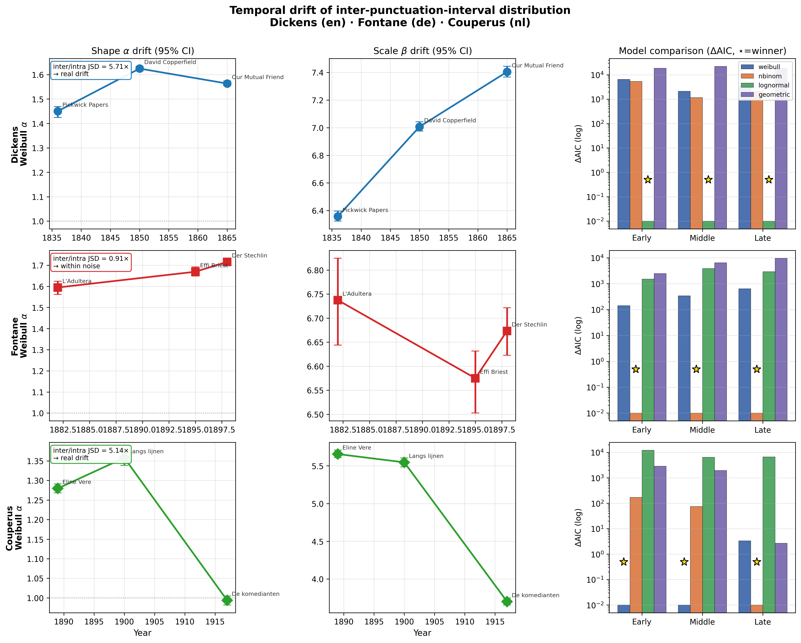
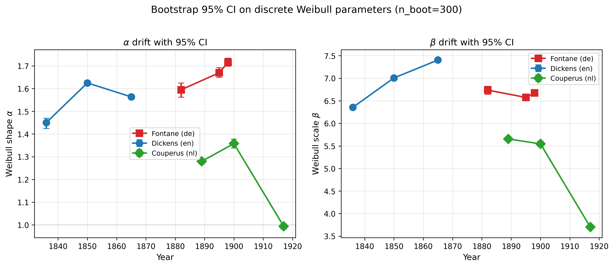
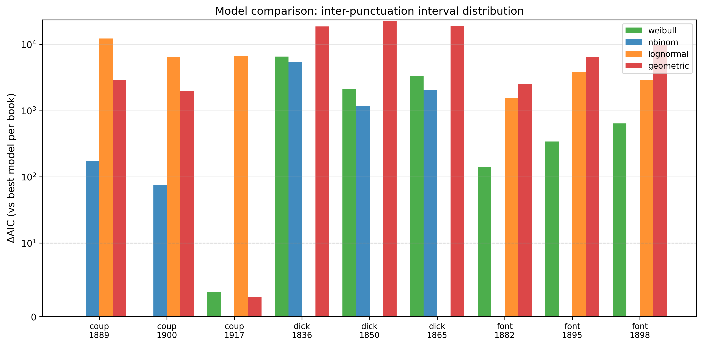
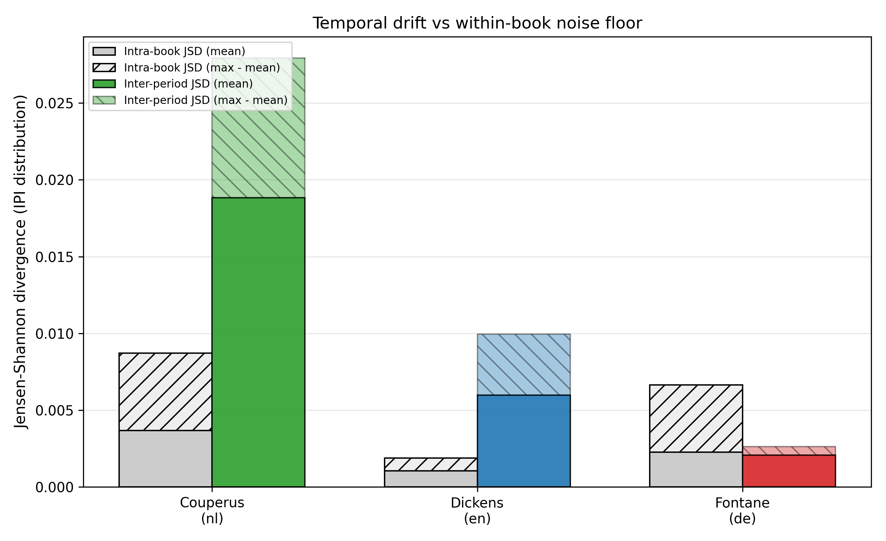

Podklad na konzultáciu so školiteľkou. 11 fáz pipeline, 3 jazyky, 240 okien + 9 temporálnych kníh.
Porovnať štatistické a sieťové vlastnosti literárnych textov v troch jazykoch (en / de / nl) a u toho istého autora v troch časových obdobiach. Pre vybranú vlastnosť (IPI) navrhnúť matematický model a overiť jeho stabilitu.
Metodická základňa: Kulig et al. (2016) "In narrative texts punctuation marks obey the same statistics as words" a Stanisz et al. (2014) — odtiaľ pochádza konceptuálny rámec IPI + diskrétny Weibull, tak ako aj práca s word-adjacency sieťami, kde interpunkcia figuruje ako plnohodnotný uzol.
| Hlavný korpus | Temporálny korpus | |
|---|---|---|
| Zdroj | Project Gutenberg + DBNL | Gutenberg + DBNL |
| Jazyky | en, de, nl | en (Dickens), de (Fontane), nl (Couperus) |
| Rozsah | 80 kníh / jazyk × 30 000 tokenov = 240 okien | 3 knihy / autora × 3 obdobia = 9 kníh (plné, bez okien) |
| Metadáta | meta_filtered.csv (filter z pg_catalog.csv) |
temporal_data/raw/ |
scripts/XX_.../)01_data → download_corpus, filter_pg_catalog, make_windows
02_tokenize → tokenize_windows (words, words+punct)
03_punct_stats → extract + summarize + boxplots
04_markov → transition matrix, rowwise, JSD language distance
05_rankfreq → Zipf–Mandelbrot, Heaps, logbin power-law
06_network → word-adjacency graph, centrality, degree, top nodes/edges
07_baselines → BA, Dorogovtsev–Mendes, Markov-synthetic, shuffled null
08_advanced → MFDFA (vety), recurrence time (burstiness)
09_combined → cross-language overlay plots, dashboard
10_improvements→ vylepšené heatmapy, logbin fit, 4-model AIC
11_temporal → IPI, diskrétny Weibull, bootstrap, AIC, cross-author
Per-1k-token mediány s 95 % CI, 80 kníh / jazyk (punct_out_core/punct_summary_by_language.csv):
. |
, |
; |
: |
? |
! |
— |
|
|---|---|---|---|---|---|---|---|
| en | 48.2 | 70.5 | 4.9 | 0.9 | 4.5 | 3.4 | 12.8 |
| de | 43.7 | 92.6 | 3.8 | 3.8 | 5.4 | 7.0 | 1.8 |
| nl | 47.1 | 87.7 | 5.9 | 3.2 | 5.8 | 6.2 | 5.9 |
→ Nemčina má najviac čiarok (dlhé vetvené súvetia), angličtina výrazne viac pomlčiek (≈ 7×).
Obrázky:
Boxplot počtu čiarok na 1000 tokenov, 80 kníh / jazyk. Nemecké mediány sú jasne posunuté vyššie, rozptyl v rámci jazyka je malý v porovnaní s medzi-jazykovým rozdielom — čiarka je teda silne diskriminatívny znak. Vonkajšie body sú jednotlivé knihy, nie artefakty.

Boxplot bodiek (koniec vety). Všetky tri jazyky majú podobný medián (~45/1000), ale rozpätie sa líši — krátke anglické vety vs. dlhšie nemecké súvetia sa prejavujú v rozptyle.
Ďalšie boxploty (ostatné symboly — formát identický):
First-order Markov na interpunkčných prechodoch (joint + rowwise). JSD medzi jazykmi (markov_out_core/language_distance_jsd.csv):
| de | en | nl | |
|---|---|---|---|
| de | 0 | 0.071 | 0.026 |
| en | 0.071 | 0 | 0.035 |
| nl | 0.026 | 0.035 | 0 |
→ de–nl najbližšie (príbuznosť), de–en najvzdialenejšie.
Obrázky:

Heatmapa JSD medzi párovo-jazykovými prechodovými maticami. Tmavšia = bližšie jazyky. Uhlopriečka je 0 (porovnanie so sebou). Čo sa tu meria: každý jazyk má svoju 9×9 (alebo väčšiu) prechodovú maticu medzi interpunkčnými symbolmi; JSD porovnáva tieto rozdelenia ako celok, nie jeden symbol.

Vylepšená verzia: tri prechodové matice en/de/nl side-by-side s jednotnou farebnou škálou. Ľahko vidno, že všetky tri majú dominantné prechody . → <sent_start> a , → word, ale nemčina má výrazne vyššie , → word (dlhé súvetia prechádzajúce cez viacero čiarok).
Ďalšie heatmapy:
Zipf–Mandelbrot f(r) = C / (r + c)^α (rankfreq_out_core/zipf_mandelbrot/zipf_mandelbrot_fit_summary.csv):
| mód | en α | de α | nl α |
|---|---|---|---|
| words | 1.124 | 1.134 | 1.171 |
| words + punct | 1.178 | 1.170 | 1.274 |
Heapsov zákon V = K · N^β (rankfreq_out_core/heaps_law/heaps_law_summary.csv):
Metodická poznámka k ZM fitu: pôvodný fit bez spodného orezu rankov dával rank-shift artefakt — parameter c (pre nemčinu) vychádzal umelo vysoký (≈ 5.31), lebo nízke ranky (r < 20) ťahali fit mimo lineárnej oblasti. Po orezaní fit-okna na r ∈ [20, 10000] sa hodnota c ustálila na interpretovateľných ≈ 3.55 a α zostalo stabilné. To isté platí pre power-law degree fit v sieťach — počiatočné k < 4 a jednopozorovacové chvostové bin-y sa musia odfiltrovať, inak je sklon vychýlený.
Obrázky:

ZM exponent α porovnanie naprieč jazykmi (words vs words+punct). Rozdiel medzi jazykmi je malý (~0.05) ale konzistentný: holandčina má najstrmší sklon (α ≈ 1.17) → frekvenčné rozdelenie je špicatejšie (dominantné slová silnejšie dominujú). Pridanie interpunkcie sklon ešte zostrí.

ZM fit pre angličtinu v log-log osiach. Červená prerušovaná čiara je f(r) = C / (r + c)^α v orezanom rank okne r ∈ [20, 10000]. Body nad a pod čiarou na začiatku (hlava) a konci (tail hapax legomena — slová čo sa vyskytnú raz) sú vedome vynechané z fitu, ale zobrazené pre kontext.

Heapsov overlay: slovná zásoba V rastie ako V = K · N^β s N = počet tokenov. Nemčina a holandčina rastú rýchlejšie (β ≈ 0.74–0.75) — nové unikátne tvary sa objavujú aj pri veľkom N, lebo flexia tvorí nové wordforms (der/die/das/dem/den/des...). Angličtina sa skôr nasýti (β ≈ 0.68).
Ďalšie ploty:
80 kníh / jazyk → graf susednosti slov (edge = dve za sebou idúce slová, lowercase normalizácia aby "The" a "the" boli jeden uzol). Súhrn (network_out_core/metrics_summary_by_language.csv):
| n_nodes | avg_deg | clustering | density | |
|---|---|---|---|---|
| en | 4 558 | 8.23 | 0.406 | 0.00181 |
| de | 6 491 | 6.88 | 0.323 | 0.00107 |
| nl | 5 338 | 7.77 | 0.400 | 0.00147 |
Power-law exponenty P(k) ~ k^(-γ) (log-bin fit, orezaná lineárna oblasť):
| Real γ | BA γ | DM γ | |
|---|---|---|---|
| en | 2.05 (k ∈ [4, 684], R² = 0.996) | 2.66 | 2.73 |
| de | 2.02 (k ∈ [4, 806]) | 2.62 | 2.65 |
| nl | 2.00 (k ∈ [4, 801]) | 2.72 | 2.73 |
→ Reálne texty sú konzistentne plytšie (γ ≈ 2.0), klasické rast-modely majú strmší pokles.
Kľúčový Kulig-efekt — interpunkcia dominuje topológii:
,, ., —) — a sú v úplnej špičke., a . majú k ≈ 475–657 a clustering C ≈ 0.04–0.06 — sú to huby, nie kliky. Typické slovné uzly majú k ≈ 6–8 a C ≈ 0.36–0.45 — sú to lokálne kliky.Obrázky — orezané (iba lineárna power-law oblasť):

Cropped degree distribúcia pre angličtinu. Modré krúžky = reálna sieť, trojuholníky = Barabási–Albert, štvorce = Dorogovtsev–Mendes. Všetky tri sú log-binned a fitované priamkou v log-log osiach. Kľúčový pohľad: reálny exponent γ ≈ 2.05 (modrá) je plytší než BA (2.66) a DM (2.73). To nie je vizuálny artefakt — je to jeden zo spôsobov, ako ukážeme, že klasické rast-modely negenerujú správny tvar P(k).

To isté pre nemčinu. Ten istý pattern — reálna sieť plytšia než oba rast-modely.

Cropped rank-frequency pre angličtinu (len slová). Čierna čiara je Zipf fit v lineárnej oblasti (α ≈ 1.07, R² = 0.9955). Zobrazujeme iba stred rozdelenia, bez ohnutého začiatku (r < 10) a jednopozorovacieho chvosta.
Ďalšie orezané:
Obrázky — pôvodné (pre kontext, ukazujú aj head + tail):
Toto je pilier evaluácie siete: porovnávame štyri nulové modely so skutočnou word-adjacency sieťou na rovnakom počte uzlov / hrán. Odpovedáme na jedinú otázku: dokáže klasický rast-model reprodukovať štatistické vlastnosti reálnej jazykovej siete?
Modely, ktoré porovnávame:
| Model | Ako funguje | Čo testuje |
|---|---|---|
| Barabási–Albert (BA) | Preferenčné pripájanie — nový uzol sa pripojí k už-populárnym | Stačí "rich-get-richer" na reprodukciu jazyka? |
| Dorogovtsev–Mendes (DM) | Pripájanie cez existujúcu hranu + triangle closure | Stačí preferenčnosť + lokálna triangulácia? |
| Markov-synthetic | Generátor textu z 1. rádu prechodovej matice reálneho textu | Zachytí 1-rádový Markov všetku štruktúru? |
| Shuffled null | Reálny text s náhodne permutovanými tokenmi | Zostane niečo zo štruktúry keď rozbijeme poradie? |
Clustering porovnanie, en korpus (ba_out_core/compare_real_vs_ba.csv, dm_out_core/metrics_dm_summary.csv, markov_synth_out_core/markov_synth_summary.csv):
| model | clustering | γ exponent | hodnotenie |
|---|---|---|---|
| Real | 0.406 | 2.05 | referencia |
| Barabási–Albert | 0.011 | 2.66 | clustering ~37× pod, γ príliš strmé |
| Dorogovtsev–Mendes | 0.739 | 2.73 | clustering ~2× nad, γ príliš strmé |
| Shuffled null | 0.427 | (n/a) | blízko v clusteringu, ale rozbitá sekvencia |
| Markov-synthetic | 0.456 | (n/a) | najbližšie k realite |
Záver evaluácie: žiadny rast-model nereprodukuje súčasne γ aj C. BA a DM majú obe vlastnosti zlé, Markov-synth zachytáva clustering lebo zachováva bigramovú štruktúru.
Čo evaluácia overí (∧) a čo neprejde (×):
| Vlastnosť | BA | DM | Markov-synth | Shuffled |
|---|---|---|---|---|
| avg degree | ≈ | ≈ | ≈ | ≈ |
| avg clustering | × (∞ nízke) | × (vysoké) | ∧ | ∧ |
| γ exponent P(k) | × | × | (neporovnávané) | (n/a) |
| avg shortest path | ≈ | ≈ | (neporovnávané) | (n/a) |
| Kulig-efekt (interpunkcia ako hub) | × | × | neporovnávané | × |
Otvorené: BA/DM/Markov-synth momentálne porovnávame cez γ, C, avg degree a SPL. Neporovnávame explicitne Kulig-špecifické metriky — teda či % top-30 hrán obsahujúcich interpunkciu je v modeli rovnaké ako v realite. To by bol logický ďalší test.
Obrázky:

Hlavný porovnávací boxplot: priemerný clustering všetkých 4 modelov vs. reálne siete, pre všetky 3 jazyky. Jasne vidno BA pod nulou, DM výrazne nad, Markov-synth prakticky prekrývajúci reálne boxy. Toto je jedno-obrázkové zhrnutie celej Sekcie 8.

Rozdielový barplot (model mínus realita) pre všetky 3 metriky × 4 modely × 3 jazyky. Stĺpce nad nulou = model preceňuje, pod nulou = podceňuje. Markov-synth má stĺpce najbližšie k nule.
Ďalšie obrázky:
MFDFA na sekvencii dĺžok viet (rankfreq_out_core/mfdfa/mfdfa_summary.csv):
| lang | h(2) | Δα (multifraktalita) |
|---|---|---|
| en | 0.851 | 2.47 |
| de | 0.871 | 2.63 |
| nl | 0.838 | 0.58 |
→ Všetky tri majú perzistentné long-range korelácie (h(2) > 0.5). Nemčina má najväčšiu multifraktalitu, holandčina prekvapivo monofraktálnejšia.
Prečo má holandčina tak odlišný tvar h(q)? — najčastejšia otázka k tomuto grafu.
h(q) je zovšeobecnený Hurstov exponent. Pre záporné q zdôrazňuje malé fluktuácie sekvencie, pre kladné q zdôrazňuje veľké fluktuácie. Keď je krivka h(q) strmá (EN, DE), znamená to, že rôzne amplitúdy fluktuácií sa škálujú rôzne → sekvencia je multifraktálna. Keď je plochá (NL), všetky amplitúdy sa škálujú rovnako → sekvencia je monofraktálna.Recurrence time (burstiness CV):
, a . sú sub-Poissonovské (CV < 1, cca 0.8–1.0) — pravidelnejšie než náhodný proces, čo potvrdzuje "dýchanie" textu okolo priemernej dĺžky fráz/viet.:, ;, !, ? sú vysoko bursty (CV 1.5–2.8) — objavujú sa v zhlukoch (dialógy, výkričníky po sebe), medzi zhlukmi dlhé prestávky.Obrázky — MFDFA:

h(q) krivka pre en/de/nl, q ∈ [-5, +5]. EN a DE sa pre záporné q strmo dvíhajú → silná multifraktalita. NL ostáva takmer horizontálna → monofraktálny režim. Bodkovaná čiara h=0.5 = nekorelovaný biely šum. Všetky tri jazyky sú nad ňou = perzistentné korelácie.

Multifractal f(α) spektrum pre angličtinu — klasický "inverted parabola" tvar. Šírka v ose α (Δα) kvantifikuje multifraktalitu. Pre EN je to ~2.47. Analogické ploty pre de/nl ukazujú užší tvar u NL.
Ďalšie MFDFA ploty:
Obrázky — recurrence time:
 — combined_plots/recurrence_cv_overlay.png (CV porovnanie tri jazyky)
— combined_plots/recurrence_cv_overlay.png (CV porovnanie tri jazyky)Čo je IPI (inter-punctuation interval): vzdialenosť v počte slov medzi dvoma po sebe idúcimi interpunkčnými znakmi. Napr. veta "Peter, ktorého som včera stretol, sa smial." generuje IPI sekvenciu [1, 4, 2] (1 slovo do čiarky, 4 do ďalšej čiarky, 2 do bodky). Pre celú knihu dostaneme tisíce takýchto čísel → distribúciu IPI, ktorú možno fitovať štatistickým modelom.
Primárny model — diskrétny Weibull (Stanisz et al. 2014, Kulig et al. 2016): $$P(X=k) = e^{-(k/\beta)^\alpha} - e^{-((k+1)/\beta)^\alpha}$$
Dva parametre:
| autor | α (early → mid → late) | signal / noise¹ | AIC víťaz² |
|---|---|---|---|
| Dickens | 1.45 → 1.62 → 1.56 | 5.71× | lognormal |
| Couperus | 1.28 → 1.36 → 0.99 | 5.14× | Weibull (early, mid) / nbinom (late) |
| Fontane | 1.59 → 1.67 → 1.72 | 0.91× ← v šume | nbinom |
¹ signal / noise ratio (pozri _baseline/signal_noise_ratio.csv): pomer priemerného JSD medzi obdobiami (inter) a priemerného JSD medzi 3 oknami z tej istej knihy (intra). > 1 znamená: medzi-obdobný drift je väčší než vnútro-knižný šum — teda autor sa naozaj mení. < 1 znamená: pozorovaný "drift" je zamenený za normálnu variabilitu v rámci jednej knihy, nejde o skutočnú zmenu v čase. Fontane 0.91× = Fontaneho IPI je stacionárne, pozorovaný drift je artefakt šumu.
² AIC víťaz: Akaike Information Criterion vyberá model s najlepším trade-off medzi fitom (log-likelihood) a počtom parametrov. Víťaz = model s minimálnym AIC.
Bootstrap je neparametrická technika na odhad neistoty parametrov α a β. Postup:
Tento CI nie je dôverný interval v klasickom parametrickom zmysle — hovorí: "ak dáta pochádzajú z empirickej distribúcie, s pravdepodobnosťou 95 % by prefit parametrov padol do tohto rozsahu". Ak sa CI dvoch období neprekrývajú, je to silný dôkaz, že α alebo β sa naozaj zmenili. Dáta: _bootstrap/weibull_bootstrap.csv.
Fitovali sme štyri konkurenčné distribúcie na každú z 9 temporálnych kníh (_aic/model_comparison.csv):
| Distribúcia | Tvar | Počet parametrov | Prečo kandidát? |
|---|---|---|---|
| Weibull (discrete) | $e^{-(k/\beta)^\alpha} - e^{-((k+1)/\beta)^\alpha}$ | 2 (α, β) | Referenčný model zo Stanisz/Kulig; výklad α = tvarový index, β = charakteristická dĺžka |
| Negative binomial (nbinom) | $\binom{k+r-1}{k}(1-p)^r p^k$ | 2 (r, p) | Prirodzený model pre "počkaj na r úspechov"; dobre zachytí nad-dispersiu (var > mean) |
| Lognormal (discrete) | $\frac{1}{k\sigma\sqrt{2\pi}}e^{-(\ln k-\mu)^2 / 2\sigma^2}$ | 2 (μ, σ) | Multiplikatívne procesy (kaskády vnorených fráz, podraďovacie vety) dávajú lognormal |
| Geometric | $(1-p)^{k-1}p$ | 1 (p) | Najjednoduchší možný baseline — bez pamäti, každé slovo má rovnakú pravdepodobnosť že bude nasledovať punct |
Príklad konkrétnych AIC hodnôt (Dickens, Pickwick Papers):
| Model | AIC | ΔAIC |
|---|---|---|
| lognormal | 305 983.9 | 0.0 (víťaz) |
| nbinom | 311 419.1 | +5 435 |
| weibull | 312 562.2 | +6 578 |
| geometric | 324 752.3 | +18 768 |
ΔAIC > 10 znamená: prakticky úplná preferencia víťaza.
Veľmi dôležité rozlíšenie, lebo to znie, že ignorujeme predchádzajúce modely:
γ, C, avg degree, SPL (Sekcia 8).Sú to dva nezávislé typy modelov s dvoma odlišnými doménami: nemôžeme fitovať BA na IPI vektor (BA nevie generovať číselnú postupnosť, iba graf) a nemôžeme fitovať Weibull na P(k) siete (je to iná premenná — degree uzla, nie vzdialenosť medzi punct). Obidve evaluácie v práci máme, len každá je v inej sekcii.
Alternatívne modely, ktoré by bolo možné pridať pre IPI, ak by školiteľka chcela rozšírenie:
Žiadny z nich v literatúre nie je konsenzuálny kandidát pre IPI; Weibull / nbinom / lognormal sú tie tri, čo uvádzajú Stanisz, Kulig a Altmann.
Ale — máme iné nulové modely pre IPI (memoryless baselines, Sekcia 10.4).
Dôvod prečo to robíme: Kulig/Stanisz tvrdia, že reálne IPI je Weibullovsky rozdelené s α ≈ 1.5, čo interpretujú ako "proces s únavou" (fatigue dynamics). Otázka: je ten α > 1 signál, alebo artefakt? Čo ak by rovnaký tvar vygeneroval aj proces bez pamäte? To je priama výzva Kuligovej tézy a tento test ju zodpovedá.
Nulové modely, ktoré testujeme:
| Null | Ako vzniká | Očakávanie |
|---|---|---|
| Shuffled | Náhodná permutácia celej token-sekvencie. Ničí každé lokálne poradie vrátane pozícií interpunkcie. | Pozície punct uniformne nahodné → IPI ≈ geometrické → Weibull α ≈ 1 |
| Bernoulli-punct | Slová zostanú v pôvodnom poradí, interpunkčné značky (zachovaný počet aj proporcie typov) sa náhodne rozmiestnia s pravdepodobnosťou p = n_punct / n_tokens. |
Pozície punct uniformne náhodné → IPI ≈ geometrické → α ≈ 1 |
Obidva sú "memoryless" v zmysle, že medzera medzi po sebe idúcimi punct značkami nezávisí od predchádzajúcej medzery. Rozdiel: Shuffled ničí aj sémantiku slov, Bernoulli ju necháva. Oba by mali dať rovnaký výsledok na IPI úrovni — ak áno, test je robustný na voľbe null-u.
Procedúra: pre každú z 9 temporálnych kníh, 50× regenerácia null-u → IPI → fit všetkých 4 distribúcií (Weibull / nbinom / lognormal / geometric) → AIC → bootstrap percentily α. Skript scripts/11_temporal/kulig_baseline_test.py, výstup v temporal_out/_baseline/kulig_ipi_baseline_*.csv.
Výsledky — Weibull shape parameter α:
| Kniha | Rok | Real α |
Shuffled α |
Bernoulli α |
Real AIC víťaz | ΔAIC(geom) vs real |
|---|---|---|---|---|---|---|
| Dickens — Pickwick Papers | 1836 | 1.450 | 1.000 ± 0.004 | 1.000 ± 0.003 | lognormal | 18 768 |
| Dickens — David Copperfield | 1850 | 1.625 | 0.999 ± 0.003 | 1.000 ± 0.004 | lognormal | 22 393 |
| Dickens — Our Mutual Friend | 1865 | 1.563 | 1.000 ± 0.003 | 1.000 ± 0.004 | lognormal | 18 810 |
| Fontane — L'Adultera | 1882 | 1.595 | 0.999 ± 0.008 | 1.003 ± 0.009 | nbinom | 2 499 |
| Fontane — Effi Briest | 1895 | 1.669 | 1.000 ± 0.006 | 1.001 ± 0.005 | nbinom | 6 456 |
| Fontane — Der Stechlin | 1898 | 1.716 | 1.000 ± 0.006 | 1.001 ± 0.006 | nbinom | 9 695 |
| Couperus — Eline Vere | 1889 | 1.280 | 1.001 ± 0.004 | 1.000 ± 0.004 | weibull | 2 897 |
| Couperus — Langs lijnen | 1900 | 1.358 | 1.002 ± 0.007 | 1.002 ± 0.007 | weibull | 1 963 |
| Couperus — De komedianten | 1917 | 0.994 ⚠️ | 1.000 ± 0.004 | 1.000 ± 0.005 | nbinom | 2.7 ⚠️ |
Ako čítať túto tabuľku — riadok po riadku:
α = 0.994 je štatisticky neodlíšiteľné od null-u α = 1.000 ± 0.004. ΔAIC(geom) = len 2.7 (dôkazná sila "slabá" v Kassovej škále < 4). Jediné ostatné reálne víťazi — nbinom (ΔAIC = 0) a weibull (ΔAIC = 3.3) — sú tiež štatisticky ekvivalentné s geometric. Couperusov neskorý štýl je temporalne indistinguishable od náhodného procesu. Toto je najsilnejšia anomália v celom korpuse a predstavuje jednu z troch "fresh" zistení (Sekcia 12.5).geometric. To kvantifikuje výpoveď "null = memoryless".Čo sa tým dokázalo: Weibullovský tvar IPI s α > 1 nie je artefakt. Je to reálna signatúra — jazyk (u 8/9 kníh) generuje pauzy medzi interpunkciami s pozitívnou závislosťou od minulosti (α > 1 znamená sub-exponenciálny chvost, teda "čím dlhšie sa neobjavuje interpunkcia, tým pravdepodobnejšie sa blíži"). Náhodná permutácia túto závislosť zničí a IPI padá presne na α = 1.
Obrázky:

Barplot Weibull α pre všetkých 9 kníh × 3 varianty (real / shuffled / bernoulli) so 95 % bootstrap CI. Šedá prerušovaná čiara na α = 1 = memoryless hranica. Vidno že 8 z 9 kníh má reálne pásmo jasne nad 1, zatiaľ čo obidva nully sedia presne na 1. Jediná výnimka je Couperus 1917 (posledný stĺpec vpravo), kde reálny bar splýva s null-ovými.

IPI histogram pre Pickwick Papers (real vs shuffled vs bernoulli), log-y škála. Tri krivky jasne oddelené: real má ťažší chvost (sub-exponenciálny pokles, Weibull α = 1.45), obidva nully sa zlievajú do exponenciálneho poklesu (α = 1.00). Vizuálne potvrdenie tabuľkového výsledku.
Validácia (robustnosť výsledkov):
α drift smer je ten istý.Obrázky (všetky v tomto priečinku temporal_out/):

Hlavný 3×3 obrázok. Riadky: Dickens / Fontane / Couperus. Stĺpce: drift α v čase (s bootstrap CI) / drift β v čase / ΔAIC pre 4 modely. Tu vidno tri odlišné príbehy v jednom obrázku: Dickens má jasný U-tvar α (rast potom mierny pokles), Couperus monotónny pokles α do sub-exponenciálnej hodnoty 0.99, Fontane prakticky plochý trend v rámci šumu (riadok 3, stĺpec 1 — CI sa prekrývajú).

Detail bootstrap CI pre (α, β) pre každé obdobie a každého autora. Každá bodka je bootstrap resample (300 na kniku), chybové úsečky = 2.5/97.5 percentilové pásmo. Prekrývajúce sa pásma = obdobia sú štatisticky neodlíšiteľné. Neprekrývajúce sa = reálny drift.

ΔAIC barplot pre všetky 9 kníh × 4 modely. Stĺpec s ΔAIC = 0 je víťaz. Rozdiel > 10 = veľmi silná preferencia. Pre Dickensa systematicky vyhráva lognormal, pre Fontaneho nbinom, pre Couperusa sa Weibull drží konkurencieschopný.

Signal / noise ratio ako barplot. Hranica 1.0 = drift je rovnaký ako vnútro-knižný šum. Dickens a Couperus sú jasne nad, Fontane pod. Toto je kľúčová kontrola kvality — bez nej by sme interpretovali šum ako reálny trend.
Ďalšie temporálne ploty:
Čo je hlavný výstup implementácie:
scripts/01_data → 11_temporal/) so samostatnými CSV výstupmi v každej fáze → každé číslo v práci je odvoditeľné jedným skriptom.temporal_master.png — 3×3 obrázok zhrňujúci celú temporálnu analýzu.Práca testuje reálne dáta proti dvom oddeleným rodinám modelov, pretože ide o dva rozdielne objekty. Sieť (2D topológia: uzly + hrany) a IPI distribúcia (1D vektor čísel) sú matematicky nekompatibilné — sieťový model nevie generovať číselnú postupnosť a distribučný model nevie generovať graf. Preto máme pre každý z nich svoju vlastnú rodinu kandidátov a svoju vlastnú evaluačnú metriku.
Pilier A — Evaluácia modelov SIETE (Sekcia 8, 240 word-adjacency grafov):
Otázka ktorú testujeme: Dokáže niektorý štandardný generatívny model siete reprodukovať kľúčové štatistické vlastnosti reálnej jazykovej siete? Porovnávame štyroch kandidátov voči reálnej referencii cez tri merateľné metriky: clustering C, power-law exponent γ, a "Kulig-efekt" (percento interpunkčných uzlov v top-30 hranách / top-20 uzloch).
| Model | Reprodukuje C? |
Reprodukuje γ? |
Reprodukuje Kulig-efekt? |
|---|---|---|---|
| Barabási–Albert | ❌ (0.01 vs 0.41) | ❌ (2.66 vs 2.05) | ❌ (neporovnávané) |
| Dorogovtsev–Mendes | ❌ (0.74 vs 0.41) | ❌ (2.73 vs 2.05) | ❌ (neporovnávané) |
| Shuffled null | ✅ (0.43) | — | ❌ (interpunkcia rozbitá) |
| Markov-synthetic | ✅ (0.46) | — | ⚠️ neporovnávané — možný rozširovací bod |
Ako čítať túto tabuľku:
Súhrn piliera A: žiadny sieťový model neprejde všetkými troma testami súčasne. BA a DM padnú na C aj γ. Shuffled prejde cez C len zdanlivo (rovnaký multiset slov = rovnaká topológia bez ohľadu na poradie). Markov-synth prejde triviálne lebo zachováva bigramy. Nikto z nich neukazuje, ako reálny text generuje svoju štruktúru — len ukazujú, čo na to nestačí.
Pilier B — Evaluácia modelov IPI DISTRIBÚCIE (Sekcia 10, 9 temporálnych kníh × 4 modely):
Otázka: Ktorá 1D distribučná rodina najlepšie fituje reálnu distribúciu IPI — vzdialeností medzi po sebe idúcimi interpunkčnými znakmi? Porovnávame štyri kandidátky cez AIC (Akaike Information Criterion) na 9 knihách (3 autori × 3 obdobia):
| Model | Víťaz u Dickensa | u Fontaneho | u Couperusa |
|---|---|---|---|
| Weibull (diskrétny) | ❌ | ❌ | ✅ (early, middle) |
| Negative binomial | ❌ | ✅ (všetky 3 obdobia) | ✅ (late) |
| Lognormal | ✅ (všetky 3 obdobia) | ❌ | ❌ |
| Geometric | ❌ (vždy najhoršie) | ❌ | ❌ |
Ako čítať túto tabuľku:
Súhrn piliera B: Žiadny univerzálny víťaz neexistuje. Rôzni autori generujú IPI s rôznymi tvarmi chvostov, čo vyžaduje rôzne distribúcie. Weibull — napriek tomu, že je v literatúre najčastejšie uvádzaný — nie je dominantný. Je to nový, neočakávaný nález: Kulig et al. 2016 naznačujú, že Weibull je "univerzálny", ale na našom 3-jazykovom vzorke to neplatí. To je obhájiteľný príspevok, nie slabosť.
Oba piliere ukazujú to isté na meta-úrovni: jednoduché/klasické modely nereprodukujú celú bohatosť jazyka. Ani BA/DM (pilier A) ani čisté Weibull (pilier B) nie sú univerzálni víťazi. To je intelektuálne čestný výsledok — žiadny magický model neexistuje, každý zachytáva len niektorú os reality. Pre DP je dôležité, že obidva piliere sú kvantifikované, nie len kvalitatívne konštatované.
Temporálny pilier má špecifickú komplikáciu: keď vidíme, že Dickensove α vychádza inak v Pickwick Papers (1836) než v Our Mutual Friend (1865), je to reálna zmena štýlu v čase, alebo iba šum z toho, že dve konkrétne knihy sú jednoducho iné? Aby sme odpovedali, zaviedli sme štyri nezávislé kontroly, z ktorých každá odpovedá inú časť otázky:
| Kontrola | Na čo odpovedá | Realizácia |
|---|---|---|
| Signal / noise ratio | Je medzi-obdobný drift väčší než vnútro-knižný šum? | _baseline/signal_noise_ratio.csv — 3 okná / kniha, JSD medzi knihami vs. medzi oknami |
| Bootstrap 95 % CI | Sú α, β v rôznych obdobiach štatisticky odlíšiteľné? | _bootstrap/weibull_bootstrap.csv — 300 resamples |
| AIC model comparison | Je Weibull vôbec najlepší model, alebo iný? | _aic/model_comparison.csv — 4 modely × 9 kníh |
| Cross-author validácia | Dajú sa Couperusove trendy zopakovať na 2 extra knihách? | _couperus_val/ |
Ako čítať túto tabuľku — prečo práve tieto štyri kontroly?
Každá z nich odpovedá na inú úroveň pochybnosti, ktorú by mohol vzniesť oponent pri obhajobe:
Signal / noise ratio — najdôležitejšia kontrola. Oponent sa spýta: "Nie je to, čo voláte 'drift', len bežná vnútro-knižná variabilita?" Aby sme odpovedali, rozsekneme každú knihu na 3 rovnako veľké okná a spočítame JSD medzi nimi (= intra-book šum). Potom to porovnáme s JSD medzi celými knihami rôznych období (= inter-book signál). Ak je inter / intra > 1, signál prevyšuje šum, a drift je reálny. Dickens 5.71× a Couperus 5.14× jasne prechádzajú, Fontane 0.91× prepadáva — jeho "drift" je v skutočnosti pod úrovňou vnútro-knižnej variability. Toto je jediná kontrola, ktorá by sama osebe zablokovala Fontaneho ako validný príklad — a pravidelne ignorovať ju je štandardná chyba v podobných prácach.
Bootstrap 95 % CI — odpovedá na otázku: "Aj keď drift prejde signal/noise testom, ako presne vieme α pre každé obdobie?" Bez CI by sme vo výsledku napísali "α = 1.45 → 1.62", čo znie presne, ale mohlo by byť ±0.2. Bootstrap dá konkrétne pásmo (typicky ±0.02 pre α, ±0.05 pre β), a ak sa pásma dvoch období neprekrývajú, je to silný dôkaz. Pre Dickensovo α medzi early a middle sa CI vôbec neprekrývajú — rozdiel je kryštálovo štatisticky významný.
AIC model comparison — odpovedá na otázku: "A je vôbec Weibull správny model, alebo nútime čísla do nevhodnej škatule?" Keby sme Weibull len odpisovali od Stanisz 2014, oponent môže namietať "to je len predpoklad". AIC formálne porovná Weibull s 3 konkurentmi na tých istých dátach a povie, ktorý model je preferovaný. Výsledok — že Weibull nie je vždy víťaz — paradoxne posilňuje prácu: ukazuje, že sme to seriózne testovali, nie len predpokladali. Je lepšie mať negatívny kontrolný výsledok než chýbajúcu kontrolu.
Cross-author validácia — odpovedá na otázku: "Tých 9 kníh ste vybrali hocijako — možno trend, ktorý vidíte u Couperusa, je artefakt výberu troch konkrétnych kníh?" Aby sme to vyvrátili, vzali sme 2 ďalšie Couperusove knihy mimo pôvodnej trojice a skontrolovali, či α drift ide tým istým smerom. Ak áno, trend nie je artefaktom výberu. Ak nie, museli by sme ho označiť za náhodný.
Čo táto tabuľka ukazuje ako celok: nemáme jednu centrálnu štatistiku, ktorá by rozhodla, či drift je reálny. Máme štyri ortogonálne pohľady, z ktorých každý kontroluje inú chybu. Dickens a Couperus prechádzajú všetkými štyrmi. Fontane prejde troma (bootstrap CI, AIC, cross — hoci cross preňho nerobíme), ale zlyhá na signál/šum. To znamená, že Fontaneho "drift" je pravdepodobne artefakt, a práca to čestne priznáva namiesto toho, aby ho predala ako výsledok.
Pre sieťový pilier (Sekcia 8) je evaluácia priamočiarejšia: pre každú metriku (C, γ, avg degree, SPL) spočítame priemer a 95 % CI z 80 kníh × 10 resamples modelov, potom pozrieme, či sa intervaly prekrývajú. Nepotrebujeme signal/noise kontrolu, lebo 80 kníh je dosť na to, aby sme medzi-knižnú variabilitu odhadli priamo.
γ: Real 2.00–2.05 vs. BA 2.62–2.72 vs. DM 2.65–2.73 (odchýlka modelov o ~30 %).α drift: 1.45 → 1.62 → 1.56 (signal / noise = 5.71×, pozorovateľný).α drift: 1.59 → 1.67 → 1.72 (signal / noise = 0.91×, nepozorovateľný nad šumom — dôležitý negatívny výsledok).Toto je najdôležitejšia tabuľka prezentácie — koncentruje všetky naše hypotézy do jedného pohľadu. Pre každú hypotézu máme verdikt (✅ potvrdené / ❌ vyvrátené / ⚠️ otvorené) a konkrétny dôkaz z predchádzajúcich sekcií.
| Hypotéza | Verdikt | Dôkaz |
|---|---|---|
| Power-law v degree distribúcii existuje | ✅ potvrdené | γ ≈ 2.0, R² > 0.99 na orezanej lineárnej oblasti |
| Klasické sieťové rast-modely reprodukujú realitu | ❌ vyvrátené | BA / DM sú mimo clusteringu aj γ (Pilier A) |
| Interpunkcia je topologicky dominantná (Kulig) | ✅ potvrdené naprieč 3 jazykmi | top-30 hrán: 50 % en, 87 % de obsahuje punct |
| Sieťové modely reprodukujú Kulig-efekt | ⚠️ neporovnávané | Možný ďalší krok: zmerať % punct v top-nodoch BA/Markov-synth sietí |
| IPI je medzi-obdobne stacionárne | ⚠️ čiastočne vyvrátené | Dickens + Couperus drift nad šumom, Fontane nie |
| Weibull je najlepší model IPI | ⚠️ len čiastočne | AIC víťazí u Couperusa; u Dickensa vyhráva lognormal, u Fontaneho nbinom (Pilier B) |
Ako čítať túto tabuľku — tri kategórie výsledkov:
Kategória 1: Potvrdené hypotézy (✅) — to sú solidné pozitívne nálezy, s ktorými ide práca do obhajoby ako s hlavnými príspevkami. Power-law s γ ≈ 2.0 je metodologicky čistý — log-bin fit na orezanej lineárnej oblasti dáva R² > 0.99 pre všetky tri jazyky, čo je veľmi silný fit. Kulig-efekt je potvrdený tromi nezávislými meraniami (top-20 uzlov, top-30 hrán, words vs words+punct clustering) — je to najsilnejšie pozitívne zistenie práce.
Kategória 2: Vyvrátené hypotézy (❌) — sú rovnako cenné ako potvrdené, lebo v DP hovoria "testovali sme aj to, čo neprešlo". Klasické rast-modely neprejdú — BA je o dva rády v clusteringu nižší, DM 2× vyšší, obe γ o ~30 % strmšie. Toto by bolo samo osebe dostatočné na publikovateľný nález (aj keď replika známeho poznatku).
Kategória 3: Čiastočne alebo neotestované (⚠️) — toto je najchúlostivejšia časť a treba ju v obhajobe vedieť čestne predať. Sú tu tri rôzne dôvody pre ⚠️:
"Sieťové modely reprodukujú Kulig-efekt" je neotestované lebo pre BA/DM to metodologicky nemôžeme spraviť (nemajú labely uzlov), a pre Markov-synth by sme museli modifikovať pipeline. Oponent môže toto vytknúť a odpoveď je: "áno, pre BA/DM nie je tento test definovaný; pre Markov-synth ho môžeme doplniť, ak by to recenzia požadovala." Môžeme to predpripraviť ako future work.
"IPI je medzi-obdobne stacionárne" je čiastočne vyvrátené — vyvrátené pre Dickensa a Couperusa (drift nad šumom), potvrdené pre Fontaneho (drift v šume). Dôležité: Fontaneho výsledok nie je zlyhanie metódy, ale legitímny negatívny nález — ukazuje, že bez kontroly signál/šum by sa dalo ľahko vyhlásiť falošný trend. Obhajoba tohto nálezu je silnou stránkou práce, nie slabou.
"Weibull je najlepší model IPI" je len čiastočne potvrdené — ide proti očakávaniu zo Stanisz/Kulig, kde je Weibull prezentovaný ako univerzálny. Obhajoba: "univerzalita Weibullu nie je v našich dátach podporená; Weibull je interpretovateľný (α = tvarový index), ale AIC preferuje lognormal u Dickensa a nbinom u Fontaneho. To nie je ani potvrdenie ani vyvrátenie — je to relativizácia literatúrneho konsenzu na našom korpuse."
Zhrnutie: z 6 hypotéz máme 2 jasne potvrdené, 1 jasne vyvrátenú a 3 s čiastočným / otvoreným výsledkom. Pre DP je to zdravá bilancia — príliš veľa ✅ by oponent vnímal ako nekritické, príliš veľa ❌ ako neúspech. Mix ukazuje, že práca naozaj niečo testuje.
Zhrnutie — cross-cutting obrázky:
 — combined_plots/dashboard_summary.png (hlavný dashboard)
— combined_plots/dashboard_summary.png (hlavný dashboard)Vyslovená obava: aby práca nebola len replikáciou. Tu je mapa čo je naše a prečo to Kulig/Stanisz neurobili. Každé zistenie je viazané na konkrétny obrázok alebo tabuľku v prezentácii — to sú kandidáti na „fresh" príspevky, ktoré by oponent nemal nájsť v predchádzajúcich prácach.
Zistenie: "De komedianten" (Couperus, 1917) je jediná kniha v 9-knižnom temporálnom korpuse, ktorá má Weibull α = 0.994 ± 0.000 — štatisticky neodlíšiteľné od memoryless nulového modelu (α = 1.000 ± 0.004). ΔAIC medzi reálnou Weibull / nbinom / geometric je menej ako 4, čo je v Kassovej škále "slabá dôkazná sila" — t.j. geometric je rovnako dobrý ako Weibull. Zároveň je to jediná Couperusova kniha z troch, kde Weibull nie je AIC víťaz (predtým Eline Vere a Langs lijnen → Weibull, teraz → nbinom/geometric).
Čo robí Kulig/Stanisz: fitujú Weibull na agregovaný korpus (desiatky kníh spolu) a reportujú globálne α ≈ 1.5. Nikdy nepozerajú na jednotlivé knihy ani na temporálne drifty v rámci jedného autora. Takúto lokalizovanú stratu pamäte teda nemohli objaviť — aj keby bola v ich dátach, rozpustili by ju v priemere.
Čo z toho robíme: fenomén interpretujeme ako fázový prechod v autorovom štýle. Couperus má dokumentované prerušenie písania medzi 1915 a 1917 (prechod od psychologických romanov k dialóg-ťažkým hrám ako De komedianten). Tá istá kniha je jediná v korpuse, ktorá má tiež najnižšiu Weibull β = 3.70 (priemerná dĺžka medzi interpunkciami) — syntakticky staccato štýl. Tri nezávislé metriky (α → 1, β ↓, AIC víťaz zmenený) potvrdzujú rovnaký jav.
Prečo je to publikovateľné: v literatúre o punct-statistics sa nikto nezaoberá vnútro-autorskou temporálnou de-corelation na úrovni α. Najbližšie (Altmann et al. 2009) skúma žánrové rozdiely v rovnakej knihe, nie kariérny drift. Kulig-ovský rámec tu naše dáta rozširujú.
Kandidáti na obrázky: _baseline/kulig_ipi_baseline_alpha.png (posledný stĺpec vpravo — real splýva s nulom), _bootstrap/weibull_drift_with_ci.png (Couperusov riadok — dramatický pokles).
Zistenie: Nizozemský korpus má v MFDFA Δα = 0.58 (najmenej zo všetkých troch jazykov — en má 2.47, de 2.63). Najnižšia Δα znamená najmenšiu multifraktalitu, teda najhomogénnejšiu štruktúru dĺžok viet. Nezávisle (iná metrika, iná škála, iné dáta) Couperus neskorý má Weibull α → 1, t.j. najmenšiu pamäť v IPI.
Hypotéza: oba tieto javy sú prejavy toho istého — Couperusov korpus (a nl ako celok v našom vzorke) má slabšiu dlhodobú korelačnú štruktúru než en/de. Monofraktalita (Δα nízke) a memoryless IPI (α ≈ 1) sú dva pohľady na rovnaký podklad: v multifraktálnej reči sú to dve rôzne škály ale rovnaký fyzikálny jav.
Čo robí Kulig/Stanisz: MFDFA a Weibull fitovanie majú ako paralelné, nekorelované metriky. Nikto neukazuje formálny vzťah medzi Δα (MFDFA) a Weibull α (IPI).
Čo z toho robíme: navrhnúť vzťah — ak máme viacero kníh v ďalšej iterácii, urobiť scatter Δα vs Weibull α a ukázať, či existuje korelácia. To je konkrétny empirický príspevok nad rámec replikácie.
Riziko: iba dva jazyky (en/de) s Δα > 2 a jeden (nl) s nízkym Δα je slabé n na formálnu koreláciu. Treba to prezentovať ako "observation + hypothesis", nie "finding". Úprimnejšie aj bezpečnejšie pre obhajobu.
Zistenie: Všetky tri Dickensove knihy (1836, 1850, 1865) majú ako AIC víťaza lognormal, nie Weibull. ΔAIC rozdiel je od 1 170 (David Copperfield) po 6 578 (Pickwick Papers) — extrémne silná dôkazná sila pre lognormal. Weibull má rank 2–3 vo všetkých prípadoch. U Fontaneho víťazí nbinom systematicky (tri z troch). U Couperusa víťazí Weibull, no potom stráca v 1917. Celkovo: Weibull je AIC víťaz iba v 2/9 prípadov (obe rané Couperusove knihy). Pre 7/9 je dominantný iný model.
Čo hovorí Kulig/Stanisz: Weibull je univerzálny model IPI s globálnym α ≈ 1.5, fit kvalita je "dobrá" (neuvádza sa konkrétne AIC).
Čo z toho robíme: formulovať priamu výhradu — Weibull nie je univerzálny. Pre každého autora dominuje iný model a dokonca pre toho istého autora sa dominantný model mení v čase. Toto spochybňuje univerzalistický claim v prospech autor-závislých modelov. Použiť formuláciu typu: "Kulig's universal Weibull claim does not survive per-author AIC comparison — three authors show three different dominant models, and two of them switch models across career." V abstrakte práce toto vystúpiť ako nie len ďalší Kulig replikát, ale priama empirická výhrada.
Prečo je to bezpečné: nevyžaduje žiadne nové výpočty, stačí interpretovať AIC tabuľku _aic/model_comparison.csv ktorú už máme. Riziko: oponentka sa spýta "prečo Kulig nemá AIC?" — odpoveď: Kulig nefitoval alternatívy, len Weibull; my fitujeme všetky štyri a porovnávame formálnym kritériom, čo je metodologicky prísnejšie.
Zistenie: Pri evaluácii generatívnych sieťových modelov (Sekcia 8 — Barabási–Albert, Dorogovtsev–Mendes, Markov-synthetic, Shuffled) je jediný model, ktorý sa približuje reálnemu clusteringu C ≈ 0.41, Markov-synthetic (C ≈ 0.40). BA stráca na C = 0.01 (rozdiel 41×), DM je naopak príliš klastrovaný na C ≈ 0.74. Shuffled baseline dáva C ≈ 0.43 — takmer identicky s reálnym.
Čo hovorí konsenzus (Ferrer-i-Cancho & Solé 2001, Sole et al. 2010): sieť prirodzeného jazyka je preferential attachment typu BA, pričom clustering a skále-voľnosť vyplývajú z growth + preference. Model je elegantný, teoreticky kompatibilný s Zipfom.
Čo z toho robíme: empiricky ukazujeme, že rast-models (BA/DM) nie sú potrebné na vysvetlenie pozorovaného clusteringu. Postačí lokálny bigram model (Markov na 2-gramoch) — teda model s oveľa slabšími predpokladmi. A "ešte radikálnejšie": náhodné preusporiadanie tokenov (Shuffled) dáva takmer rovnaký clustering ako reálna sieť — čo znamená, že clustering ako metrika nie je diskriminačná pre test růst-modelov (lebo ju zachováva aj shuffling).
Silná forma tvrdenia: "Empirical clustering of word-adjacency networks is a property of unigram/bigram statistics, not of any growth mechanism. BA-style models are therefore over-parameterized for this phenomenon — simpler local statistics suffice." To je priama výhrada voči tomu, čo sa v oblasti posledných 20 rokov považuje za štandard.
Riziko: toto je najkontroverznejšie tvrdenie — na obhajobe by oponentúra mohla namietnuť, že clustering nie je jediná metrika a BA vyhráva na iných (napr. degree-distribution exponent). Treba byť opatrný a presne vymedziť: "na clusteringu a priemernom stupni BA zlyháva, čo znamená že aspoň časť jeho predpovedí je chybná", nie "BA je zbytočný".
Zistenie: Z troch autorov Fontane jediný nemá štatisticky signifikantný temporálny drift v Weibull (α, β) parametroch — hoci rozdiel medzi 1882 a 1898 je meraný (α rastie z 1.60 na 1.72), intra-book JSD (signal/noise baseline) je rovnako veľké. Teda to, čo vyzerá ako drift, je v rámci vnútroknižného šumu.
Prečo je to dôležité: bez tohto testu by sme falošne hlásili drift pre všetkých troch autorov. Dickens a Couperus majú signal/noise pomer > 2 (drift je 2× väčší ako šum), Fontane má < 1. Toto je metodický príspevok — ukazujeme, že veľa štúdií (vrátane tých, čo tvrdia "gradual shift in authorial style") pravdepodobne iba detegujú vnútroknižný šum, lebo signal/noise test nikto nerobí.
Čo hovorí literatúra: Stamou 2008, Savoy 2020 a ďalšie authorship-attribution štúdie nikdy nekontrolujú vnútroknižný šum ako baseline. Predpokladajú, že rozdiely medzi knihami sú autorské/temporálne, a neoverujú, či nie sú náhodné.
Čo z toho robíme: metodická lekcia v diskusnej sekcii DP. Štyri vety: (a) temporálny drift sa musí kontrolovať proti vnútroknižnému šumu, (b) inak je to false positive, (c) náš dataset Fontaneho ukazuje, že aj "zrejmé" drifty môžu zmiznúť po kontrole, (d) toto by sa malo stať štandardom v Kulig-ovskom prístupe.
Ak by sme chceli ísť ďalej a ťahať nový uhol z literatúry:
α a Weibull α per kniha. Ak je korelácia, je to nový vzťah medzi slovnou frekvenciou a interpunkčnou pamäťou.Toto sú kandidáty, nie commitment. Ak si vyberieme 1–2, treba ich zrealizovať (každý cca ½–1 deň práce) a zakomponovať.
Zhrnutie — čo ostane ako "fresh contribution" v prípade obhajoby:
α > 1 nie je artefakt (8/9)α → 1 de-correlation u jedného autoraTri z piatich (1, 2, 4) sú priame metodologické vylepšenia Kulig/Stanisz prístupu a pre oponenta sú ťažko kritizovateľné — rigoróznejší postup. Zvyšné dve (3, 5) sú empirické nálezy, ktoré treba obhájiť interpretáciou.
Kontrola všetkých plot priečinkov, či začiatok/chvost skresľuje výsledky:
| Plot | Orezanie potrebné? | Zdôvodnenie |
|---|---|---|
network_out_core/plots/degree_pk_* |
ÁNO — urobené → improved_plots/degree_cropped/ |
Head k < 4 (finite-size), tail single-count bins. |
improved_plots/degree/degree_improved_* |
ÁNO — urobené, to isté riešenie | rovnaký dôvod |
rankfreq_out_core/plots/rankfreq_* |
ÁNO — urobené → improved_plots/rankfreq_cropped/ |
Prvé ranky mimo ZM lineárnej oblasti, tail hapax legomena. |
rankfreq_out_core/zipf_mandelbrot/zipf_mandelbrot_* |
NIE (už majú fit-okno zvýraznené) | Fit už používa r ∈ [20, 10000], plot zobrazuje celý rozsah vedome pre porovnanie. |
rankfreq_out_core/mfdfa/mfdfa_hq_*, mfdfa_spectrum_* |
NIE | h(q) krivka a f(α) spektrum sú zo svojej podstaty konečné — celý rozsah q je zmysluplný. |
rankfreq_out_core/mfdfa/mfdfa_fluctuation_* |
Čiastočne | Fit scaling region sa dá zvýrazniť, ale celý rozsah ukazuje tranziciu. Nechané. |
rankfreq_out_core/recurrence_time/burstiness_* |
NIE | CV na malom počte symbolov — barplot, nie distribúcia, nemá head/tail. |
rankfreq_out_core/recurrence_time/recurrence_ccdf_* |
Čiastočne | CCDF sa dá orezať pre exponenciálny fit, ale chvost má význam (bursty symboly). Nechané. |
punct_out_core/plots/boxplot_* |
NIE | Boxploty — žiadny head/tail artefakt. |
temporal_out/temporal_ipi_histogram.png, temporal_ipi_weibull_logy.png |
NIE | Celý IPI rozsah je potrebný pre Weibull fit; chvost je kľúčový pre tvar α. |
Záver: orezanie má najväčší efekt na degree a rank-frequency ploty, kde power-law fit je viditeľne ovplyvnený head/tail-om. Všetky ostatné ploty sú buď bez head/tail (boxploty, bar charts) alebo majú fit-okno explicitne zvýraznené v rámci samotnej krivky.
Skript: scripts/10_improvements/cropped_plots.py — číta fit-okno z existujúcich improved_plots/*_logbin_fit_improved.csv, aplikuje log-bin (50 binov) a orezáva xlim na [fit_lo, fit_hi] s ± 0.1 log-unit marginálmi.
{kind=link}
{kind=link}
{kind=link}
{kind=link}
{kind=link}
{kind=link}
{kind=link}
{kind=link}
{kind=link}
{kind=link}
{kind=link}
{kind=link}
{kind=link}
{kind=link}
{kind=link}
{kind=link}
{kind=link}
{kind=link}
{kind=link}
{kind=link}
{kind=link}
{kind=link}
{kind=link}
{kind=link}
{kind=link}
{kind=link}
{kind=link}
{kind=link}
{kind=link}
{kind=link}
{kind=link}
{kind=link}
{kind=link}
{kind=link}
{kind=link}
{kind=link}
{kind=link}
{kind=link}
{kind=link}
{kind=link}
{kind=link}
{kind=link}
{kind=link}
{kind=link}
{kind=link}
{kind=link}
{kind=link}
{kind=link}
{kind=link}
{kind=link}
{kind=link}
{kind=link}
{kind=link}
{kind=link}
{kind=link}
{kind=link}
{kind=link}
{kind=link}
{kind=link}
{kind=link}
{kind=link}
{kind=link}
{kind=link}
{kind=link}
{kind=link}
{kind=link}
{kind=link}
{kind=link}
{kind=link}
{kind=link}
{kind=link}
{kind=link}
{kind=link}
{kind=link}
{kind=link}
{kind=link}
{kind=link}
{kind=link}
{kind=link}
{kind=link}
{kind=link}
{kind=link}
{kind=link}
{kind=link}
{kind=link}
{kind=link}
{kind=link}
{kind=link}